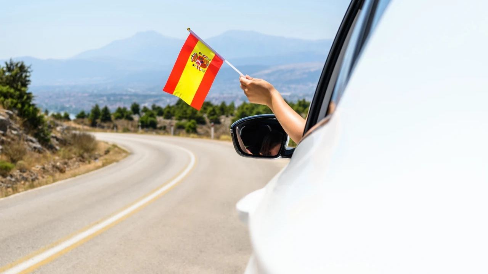
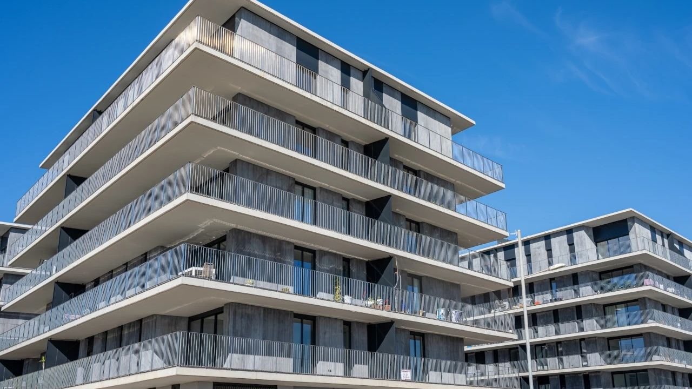

Living · Moving
Moving to Spain Step by Step: How to Prepare
 By Aleksandra Kobus · · updated · 4 min read
By Aleksandra Kobus · · updated · 4 min read

In short: Start by choosing the area and, ideally, renting there for a few months. EU, EEA and Swiss citizens can live in Spain freely but must register as residents after three months. Others need a visa, such as the non-lucrative visa (from about €2,400 a month of income in 2026) or the digital nomad visa; the golden visa for property buyers ended in April 2025. Then get your NIE, register at the town hall (padrón), open a bank account and sort out healthcare. If you spend more than 183 days a year in Spain you become tax resident there. Exchange a non-EU driving licence within six months.
Moving to Spain is easier with a plan. The paperwork is not difficult, but the order matters, and the rules depend on your nationality. This guide takes you through the steps, from choosing where to live to your first visit to the doctor.
1. Choose where to live and rent first
Spain is very varied. The Costa Blanca and the Costa del Sol have mild winters and large international communities; cities such as Alicante, Valencia and Málaga offer jobs and culture all year. Visit in winter as well as summer before you decide. See Costa Blanca or Costa del Sol.
Many people rent for three to six months before buying. It lets you get to know the area and gives you an address for the paperwork. See long-term rental in Spain. Start learning Spanish early, too: English goes a long way on the coast, but offices, doctors and neighbours are easier in Spanish.
2. Your right to live in Spain
- EU, EEA and Swiss citizens can live in Spain without a visa. If you stay more than three months, register at the Central Register of Foreigners and get your certificado de registro. You need proof of enough income and health insurance.
- Everyone else, including UK and US citizens, can stay up to 90 days in any 180 without a visa. To live in Spain you need a residence visa, for example the non-lucrative visa for people with their own income (at least €2,400 a month for one person in 2026, plus €600 for each family member) or the digital nomad visa for remote workers. After arrival you get a residence card (TIE).
- The golden visa for buying property worth €500,000 ended on 3 April 2025. Buying a home no longer gives you residence by itself. See staying in Spain more than 90 days.
3. NIE, padrón and a bank account
- NIE: your foreigner's identity number, needed for almost everything. You can apply at a Spanish consulate before you move or at the police in Spain. EU citizens get it with the registration certificate. See NIE number.
- Padrón (empadronamiento): register your address at the town hall. You need it for healthcare, schools, a driving licence and local tax discounts.
- Bank account: needed for bills, taxes and buying a home. See banks in Spain.
- Social security number: your employer arranges it, or you get it yourself if you are self-employed or join the public health system.
4. Tax residence
If you spend more than 183 days a year in Spain, or your main business or family is here, you become tax resident and pay Spanish income tax on your worldwide income. Residents must also report assets abroad worth over €50,000 (form 720). Check your country's tax treaty with Spain and get advice before you move. See resident vs non-resident in Spain.
5. Healthcare
- Workers and the self-employed are covered by the public system through social security. Register at your local health centre (centro de salud) to get your health card.
- Pensioners from the EU and some other countries can bring their public cover with form S1 from their home country.
- Others need private health insurance, which is also a visa requirement. After a year on the padrón you can also join the public system by paying a monthly fee (convenio especial).
Many private clinics on the coast have English-speaking doctors.
6. Schools
School is compulsory from 6 to 16: primary school (Primaria) lasts six years and secondary (ESO) four, followed by two years of Bachillerato. State schools are free and places are given mainly by where you live, which is another reason to register on the padrón. The coast also has many international schools with the British, American or other curricula. In the Valencian Community and Catalonia, children also learn the regional language.
7. Driving licence and car
- EU and EEA licences stay valid in Spain. If yours has no expiry date, you must renew it in Spain after two years of residence.
- Other licences can be used for six months after you become resident. After that you must exchange them, which is possible only if Spain has an agreement with your country (for example the UK). Otherwise you must take the Spanish test.
- A car brought from abroad must be registered on Spanish plates within the set time. See traffic fines in Spain.
8. Buying your home
Once you have your NIE and a bank account, you can buy. Banks lend residents up to about 80% of the value and non-residents usually 60 to 70%. Budget about 10 to 13% on top of the price for taxes and fees. See how to buy in Spain, mortgages in Spain and buying a new build.
Frequently asked questions
Do I need a visa to move to Spain?
Not if you are an EU, EEA or Swiss citizen, but you must register as a resident after three months. Everyone else, including UK and US citizens, needs a residence visa to stay longer than 90 days in 180.
How much income do I need for the non-lucrative visa?
In 2026 at least €2,400 a month for the main applicant, plus €600 a month for each family member, and private health insurance.
Can I get residence by buying a property in Spain?
No longer. The golden visa for property investment ended on 3 April 2025. You need another visa, such as the non-lucrative or digital nomad visa.
What is the padrón and why do I need it?
It is the town hall register of residents. You need it for healthcare, school places, a driving licence and some local tax discounts.
When do I become tax resident in Spain?
If you spend more than 183 days a year in Spain, or your main business or family is here. You then pay Spanish tax on your worldwide income.
Can I use my foreign driving licence in Spain?
EU and EEA licences stay valid. Other licences can be used for six months after you become resident; then you must exchange them if there is an agreement, or take the Spanish test.
Plan your move with us

We help clients find the right area, rent or buy their home and connect them with lawyers, tax advisers and other trusted local services. Contact us.
Sources: Ministerio de Asuntos Exteriores – Non-lucrative residence visa · BOE – Ley 35/2006 del IRPF, article 9 (tax residence)